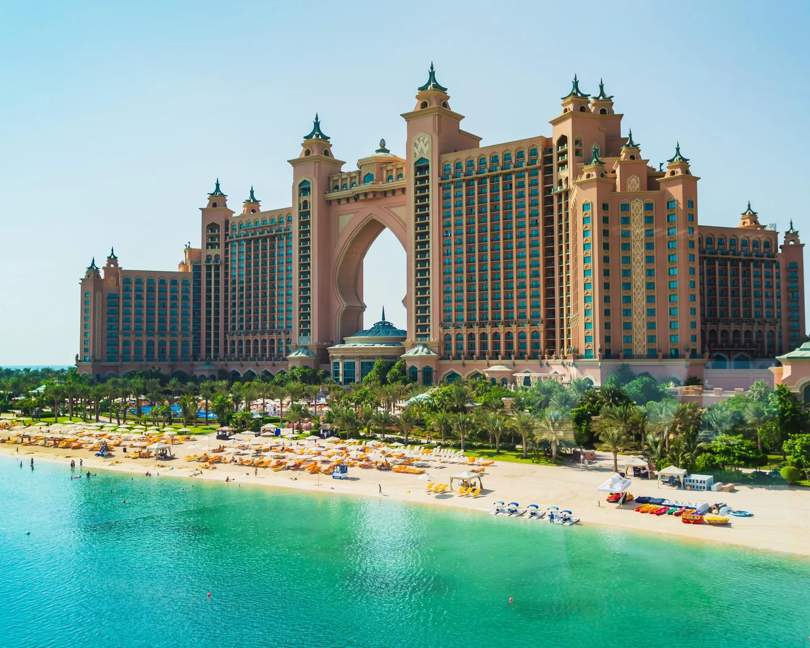

Dubái, Emiratos Árabes Unidos
Rascacielos, desierto y playas de lujo

Descripción
Dubái es una ciudad del Golfo Pérsico que pasó de ser un pequeño puerto pesquero a convertirse en uno de los destinos más modernos del mundo. Su símbolo es el Burj Khalifa, el edificio más alto del planeta, rodeado de centros comerciales, fuentes y avenidas llenas de rascacielos.
Además de la ciudad, Dubái ofrece experiencias muy distintas: parques acuáticos, playas de arena blanca, hoteles espectaculares como Atlantis The Palm y safaris por el desierto con paseos en dunas, cena bajo las estrellas y espectáculos tradicionales.
Es un destino ideal para quienes buscan combinar lujo, aventura y cultura árabe en un solo viaje. Se recomienda visitarlo entre noviembre y marzo, cuando el clima es más agradable.
Sitios para visitar
- Burj Khalifa (observatorio At the Top)
- The Dubai Mall y las Fuentes de Dubái
- Atlantis The Palm y Palm Jumeirah
- Parque acuático Aquaventure
- Safari por el desierto
Precios estimados por persona (USD)
- Vuelo ida y vuelta desde Panamá: $1,200
- Hospedaje (5 noches): $600
- Burj Khalifa, At the Top: $55
- Parque acuático Aquaventure: $87
- Safari por el desierto: $65
- Comidas y transporte local: $250
- Total estimado: $2,250
Precios aproximados consultados en octubre de 2026. Pueden variar según la fecha y la temporada.
Tiempo de estadía recomendado
5 a 7 días